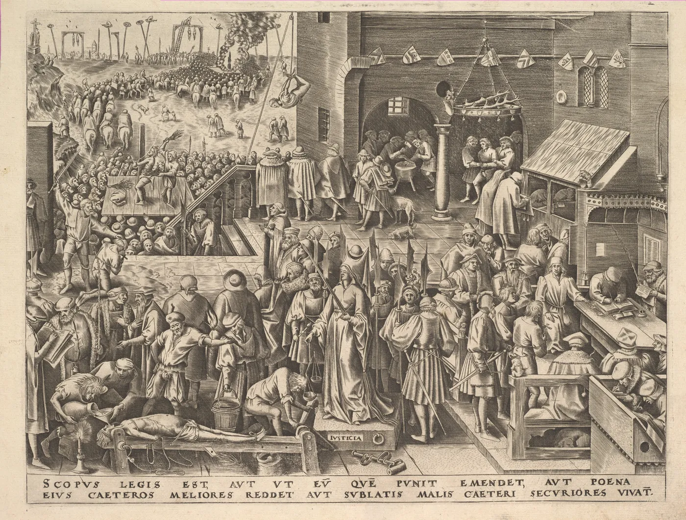

Cidadania, módulo 1, sessão 06
Uma regra para quem perde
Versão para imprimir: o material, os 14 exercícios e o papel do fim. Fazes tudo sozinho, só com uma caneta.
Parte 1, ver antes de concluir
Abre: Uma regra para quem perde
Caso inventado.
A escola tem seis tardes no auditório para as turmas A, B e C do 10.º ano ensaiarem as peças. Na reunião de delegados, o Gonçalo, do 10.º A, propõe a regra: primeiro, a turma com o guião mais adiantado. É a dele. A regra passa com dois votos contra um.
Uma regra é justa se quem a faz ganha com ela?
Decide
A regra do Gonçalo pode ficar?
☐ Sim ☐ Não ☐ Depende
Escreve, numa linha, a razão que pesa mais para ti.
Exercício 1: Se acordasses noutra turma
No conto The Egg, de Andy Weir (sessão 03), o homem descobre um segredo sobre as outras vidas. De onde julgarias a regra do Gonçalo?
- Do lugar do Gonçalo, que teve o trabalho de a propor.
- Também do lugar da turma que fica para o fim.
- Pelo voto: se dois em três a aprovaram, está julgada.
Resposta: ______
Exercício 2: Facto ou opinião
Caso inventado: no corredor, alguém diz «O 10.º C não trabalhou nada este período». É uma opinião: discute-se, não precisa de prova.
☐ Verdadeiro ☐ Falso
Olha: Uma gravura cheia de gente
Antes de olhar Olha primeiro para a gravura inteira; só depois para a figura do centro.

Philips Galle, segundo Pieter Bruegel, o Velho, Justice (Justicia) from The Virtues; editor: Hieronymus Cock. The Metropolitan Museum of Art, 28.4(29). Registo de origem. Domínio público; a imagem do museu é CC0.
Exercício 3: O que a figura mostra
Olha para a figura do centro. O que se vê nela, sem acrescentar nada?
- Olhos vendados, que por isso não vê quem está a julgar.
- Olhos vendados, uma espada numa mão e um livro na outra.
- Olhos vendados, uma espada numa mão e uma balança na outra.
Resposta: ______
Exercício 4: Imagem, legenda ou nenhuma
Liga cada frase ao sítio onde se apoia: na gravura, na legenda ou em nenhuma das duas.
- A gravura faz parte de uma série sobre as virtudes.
- Quem a desenhou achava justo o que se faz à volta.
- Um homem está deitado e preso a um banco.
- Só a legenda o diz
- Vê-se na gravura
- Nenhuma das duas o prova
Liga: 1 ___ 2 ___ 3 ___
Lê: O que se pede a quem decide
Antes de ler O que a lei pede a quem decide pela Administração Pública.
Artigo 9.º«A Administração Pública deve tratar de forma imparcial aqueles que com ela entrem em relação, designadamente, considerando com objetividade todos e apenas os interesses relevantes no contexto decisório e adotando as soluções organizatórias e procedimentais indispensáveis à preservação da isenção administrativa e à confiança nessa isenção.»
Código do Procedimento Administrativo, no Diário da República.
Artigo 69.º, n.º 1«[…] não podem intervir em procedimento administrativo […] nos seguintes casos: a) Quando nele tenham interesse […] b) Quando […] nele tenham interesse […] algum parente […] até ao segundo grau da linha colateral […]»
Segundo grau da linha colateral: irmãos (Código Civil, artigo 1581.º).
Exercício 5: Aquilo em que se confia
No artigo 9.º, sublinha as palavras que dizem o que a Administração tem de preservar e em que os outros têm de poder confiar.
A Administração Pública deve tratar de forma imparcial aqueles que com ela entrem em relação, designadamente, considerando com objetividade todos e apenas os interesses relevantes no contexto decisório e adotando as soluções organizatórias e procedimentais indispensáveis à preservação da isenção administrativa e à confiança nessa isenção.
Exercício 6: Quem decide e quem ganha
«[…] não podem intervir em procedimento administrativo […] nos seguintes casos: a) Quando nele tenham interesse, por si […]»
O artigo 69.º afasta quem decide na Administração Pública em certos casos. O que tem a regra do Gonçalo em comum com eles?
- Quem propõe a regra ganha com o que se decide.
- O critério do guião adiantado é difícil de medir.
- A regra foi aprovada só por dois dos três delegados.
Resposta: ______
Exercício 7: Um júri com um irmão
«[…] não podem intervir em procedimento administrativo […] b) Quando […] nele tenham interesse o seu cônjuge […] algum parente ou afim em linha reta ou até ao segundo grau da linha colateral […]»
Caso inventado: um membro do júri de um concurso da câmara é irmão (2.º grau da linha colateral) de um candidato. Pode ficar, desde que não avalie o irmão.
☐ Verdadeiro ☐ Falso
Exercício 8: Se a regra for a melhor
Imagina que a regra do Gonçalo era mesmo a melhor para as três turmas. Mesmo assim, havia um problema em ter sido ele a propô-la.
☐ Verdadeiro ☐ Falso
Conceito: Escolher sem saber o lugar
O caso
O Gonçalo sabia onde estava. E se não soubesse?
Mais perto
| Se ficas | Convém-te |
|---|---|
| no 10.º A | o guião mais adiantado primeiro |
| na turma mais atrasada | não ficar para o fim |
| num lugar que não sabes | uma regra boa em qualquer lugar |
O nome
Escolher sem saber o lugar
Escolher a regra antes de saberes se ganhas ou perdes.
O que não é
Não é sorteio: escolhe-se às cegas a regra, não quem ganha.
A ideia é de John Rawls (Uma Teoria da Justiça, 1971): escolher as regras atrás de um véu de ignorância, sem saber o lugar que nos calha. Robert Nozick respondeu (Anarquia, Estado e Utopia, 1974): uma repartição é justa se vier de aquisições e transferências legítimas, feitas livremente, não de um padrão escolhido à partida.
Exercício 9: Cada regra, o seu efeito
Caso inventado: seis sessões de câmara para três projetos. O A tem quatro cenas prontas; o C perdeu uma sessão porque faltou material. Liga cada regra ao seu efeito.
- A ordem tira-se à sorte.
- Mais sessões para quem perdeu material.
- Primeiro, quem tem mais cenas prontas.
- Duas sessões para cada projeto.
- O A filma antes dos outros.
- Qualquer um pode ficar para o fim.
- A perda do C fica por compensar.
- O C recupera o que lhe faltou.
Liga: 1 ___ 2 ___ 3 ___ 4 ___
Exercício 10: Um caso real
«[…] não basta que se demonstre a ilegalidade da intervenção do autarca num procedimento administrativo em que são interessados familiares seus, sendo necessário que se demonstre que essa intervenção foi determinada intencionalmente com o propósito de obter uma vantagem patrimonial indevida.»
Caso real (Supremo Tribunal Administrativo, 2024): uma vereadora abriu um concurso da câmara a que concorreram a filha, o irmão e a cunhada. Não perdeu o mandato. Porquê?
- Os familiares não chegaram a entrar para a câmara.
- Não se provou que quisesse dar-lhes uma vantagem indevida.
- Declarou-se impedida, embora só no fim do concurso.
Resposta: ______
Parte 2, pesar e escrever
Volta ao caso: A delegada do 10.º C pede a palavra
Parte 2
Caso inventado.
Na reunião seguinte, a Beatriz, delegada do 10.º C, lembra que a turma dela perdeu duas tardes com as obras no auditório. Propõe outra regra: mais tardes para o 10.º C. O Gonçalo responde: «A minha regra premeia quem trabalhou. Não a fiz para mim.»
Exercício 11: Sem saber o lugar
A reunião vai decidir outra vez. Põe por ordem os passos para escolher a regra sem saber o lugar.
- Rever a regra, se a objeção for boa.
- Juntar as regras propostas, a do Gonçalo e a da Beatriz.
- Escolher uma sem saber a turma que calha a cada um.
- Ouvir a objeção da turma que fica a perder.
Ordem: ___ → ___ → ___ → ___
Em turma
A regra do Gonçalo pode ficar?
☐ Sim ☐ Não ☐ Depende
Compara com a tua escolha do início. A razão que pesou mais: ☐ O guião adiantado ☐ As tardes perdidas do 10.º C ☐ A confiança (artigo 9.º)
Exercício 12: Facto, regra ou razão
Liga cada frase ao que ela é numa justificação.
- «A Administração Pública deve tratar de forma imparcial aqueles que com ela entrem em relação»
- O 10.º C perdeu duas tardes de ensaio com as obras.
- «Não a fiz para mim.»
- Um facto do caso
- A razão de uma das partes
- Uma regra escrita numa lei
Liga: 1 ___ 2 ___ 3 ___
Exercício 13: O passo que falta
Facto: o 10.º C perdeu duas tardes com as obras. Fonte: o artigo 9.º, «todos e apenas os interesses relevantes». Aplicação: a perda conta. Falta o limite.
- Isto não decide sozinho quem deve ensaiar primeiro.
- A Beatriz falou na reunião como delegada do 10.º C.
- Por isso, a Beatriz tem razão e o Gonçalo está errado.
Resposta: ______
Exercício 14: O que as provas permitem
Escolhe a conclusão que diz o que as provas permitem, sem ir além delas.
- A regra é justa, porque a maioria dos delegados a aprovou.
- A regra é injusta, porque o Gonçalo quis favorecer a turma.
- Vinda de quem ganha com ela, a regra deixa dúvidas; falta pesá-la.
Resposta: ______
Agora, em papel
Num papel pequeno, sozinho e sem telemóvel.
Uma regra é justa se quem a faz ganha com ela?
CódigoData
- A tua conclusão, por agora.
- Uma prova: um facto do caso e uma expressão exata, entre aspas, com o artigo.
- Uma dúvida que ainda tens.
O que conta
- A conclusão responde à pergunta sem ir além das provas.
- A prova junta um facto a uma expressão exata, com o artigo.
- A dúvida, respondida, podia mudar a conclusão.
Um exemplo, sobre outro caso
Caso inventado: na cantina, os do 12.º ano passam sempre à frente na fila.
- Conclusão: ser mais velho não explica a vantagem a quem espera.
- Prova: todos esperam pela mesma refeição; todos nascem «iguais em dignidade e em direitos» (Declaração, artigo 1.º).
- Dúvida: há outra razão, como um horário mais curto?